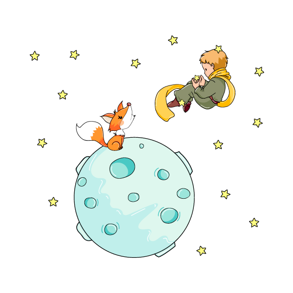

"Só se vê bem com o coração, o essencial é invisível aos olhos."

O Pequeno Príncipe é uma bela história de reflexão e aprendizado. Com uma escrita fluída e simples, que envolve desde o público infantil até o mais maduro, o autor incita o leitor a reavaliar seus valores, levando-o a repensar as verdadeiras riquezas da vida. Amor, amizade, trabalho, dinheiro, política… O quanto esses itens são fundamentais em nossas vidas? Quais deles são – ou devem ser – nossas reais prioridades? Guiados pelo coração bondoso de uma criança, um pequeno príncipe que veio de muito longe, reaprendemos que o sentido da vida está nas pequenas coisas; que o essencial é invisível aos olhos.
A trama gira em torno das experiências do Pequeno Príncipe, um jovem que sai de seu planeta e segue viajando em busca de novos mundos e de inúmeras descobertas. – Ele quer saber e aprender cada vez mais! Em uma de suas andanças o jovenzinho vai parar na Terra, mais especificamente no meio do deserto, local em que encontra um piloto perdido após um pouso complicado. Enquanto o piloto tenta consertar seu avião, ele e o pequeno príncipe criam um forte laço de amizade, compartilhando histórias e aprendizagens. O pequenino, com seu coração puro e seu instinto curioso, leva o piloto – e o próprio leitor – a pensar sobre as certezas da vida. É na simplicidade dessa criança, que compreende a beleza de uma estrela e o valor de uma única flor, que aprendemos a enxergar a vida sob um novo olhar.
O livro conta a história de um principezinho um tanto quanto solitário, que vivia em um planeta quase tão pequeno quanto ele, onde nasciam alguns arbustos que poderiam se tornar árvores enormes que tomariam todo o planeta; por conta disso, o príncipe tinha que tirar esses arbustos antes que se tornassem baobás.
Ao longo do livro, o príncipe se apaixona por uma rosa delicada e um tanto narcisista. Ele faz de tudo pra cuidar dela, mas um dia ele se cansa e “vai embora”. Ele faz várias viagens onde encontra todo tipo de gente; pessoas, em sua maioria, perdidas em seu próprio ego. O príncipe também faz amizades, uma delas, com uma raposa que ensina a ele o valor de cativar alguém e que isso torna as coisas especiais e únicas. Além da raposa, o pequeno príncipe também conhece o aviador que, com o decorrer da amizade, se encanta pela história do principezinho e toda sua essência; e é inclusive quem conta as histórias dele, mas o aviador nunca mais vê o principezinho depois disso.